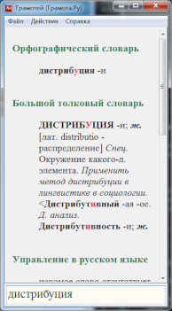
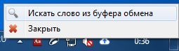

Приложение для быстрого поиска по словарям интернет-портала Грамота.Ру (http://gramota.ru/).
При поиске слов можно использовать подстановочные символы звездочка (*) и вопросительный знак (?).
Звездочка (*) используется для представления одной или нескольких неизвестных букв в слове, а также для представления отсутствия букв в слове в определенной позиции.
Вопросительный знак (?) используется для представления одной неизвестной буквы в слове.
Примеры правильных запросов: чес*ный, проф*ес*ор, ветрен*ый.
Ввод слова вручную
Для поиска требуется ввести искомое слово в текстовое поле и нажать клавишу "Enter".

Поиск слова из буфера обмена
Для поиска из буфера обмена следует вызвать контекстное меню иконки в трее.
